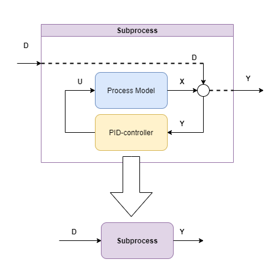
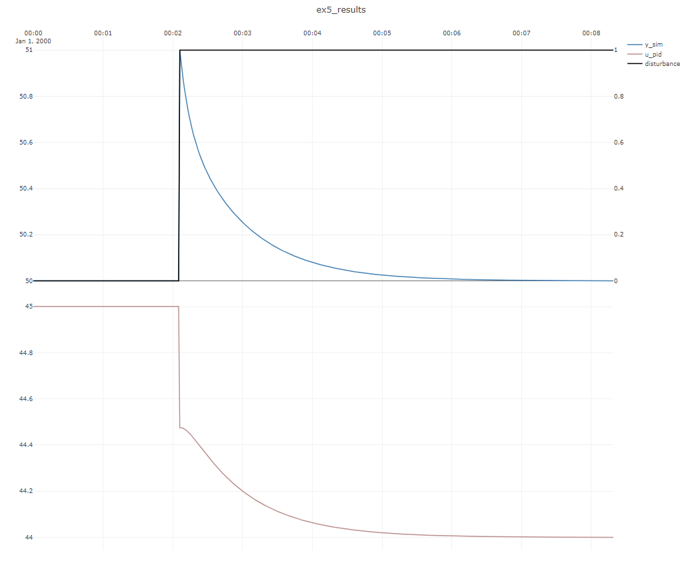

Example 5 : Dynamic simulation of PID-control
In this example, a step disturbance influences a linear subprocess that is controlled by a PID-controller toward a constant setpoint of y=50, like depicted in the below figure:

SubProcessSimulator.CoSimulateProcessAndPID co-simulates a single PID-controller/processes combination such as this.
public void Ex5_pid_sim()
{
int timeBase_s = 1;
int N = 500;
var modelParameters = new DefaultProcessModelParameters
{
WasAbleToIdentify = true,
TimeConstant_s = 10,
ProcessGains = new double[] { 1 },
TimeDelay_s = 0,
Bias = 5
};
var processModel = new DefaultProcessModel(modelParameters, timeBase_s);
var pidParameters = new PIDModelParameters()
{
Kp = 0.5,
Ti_s = 20
};
var pid = new PIDModel(pidParameters, timeBase_s);
var dataSet = new SubProcessDataSet(timeBase_s,N);
dataSet.D = TimeSeriesCreator.Step(N / 4, N, 0, 1);
dataSet.Y_setpoint = TimeSeriesCreator.Constant(50,N);
SubProcessSimulator<DefaultProcessModel, DefaultProcessModelParameters>.
CoSimulateProcessAndPID(processModel, pid, ref dataSet);
Plot.FromList(new List<double[]> { dataSet.Y_sim, dataSet.U_sim.GetColumn(0), dataSet.D },
new List<string> { "y1=y_sim", "y3=u_pid","y2=disturbance" },
timeBase_s, "ex5_results");
}
The resulting dynamic simulation: 
Note that the PID-controller is able to bring the subprocess back to the setpoint despite the disturbance.
The initial fast response of the proportional term Kp is seen in the plot of u_pid, followed by the gradual
influence of the integral term Ti_s, as is expected.
Note
SubProcessSimulator ensures that the PID/model combination starts in steady-state, so there is no bump or transient in the
start of the dataset.
Note
Normally in industrial settings, PID-controllers are scaled, scaling information can be included by the inputting a PIDscaling to the
PIDModelParameters object on initialization.